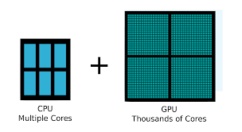

😎 El blog de hoy es sobre la !
Introducción a las Unidades de Procesamiento Gráfico (GPU)
Fecha de publicación: 1 de septiembre, 2024
¿Qué es una GPU?
La Unidad de Procesamiento Gráfico (GPU) es un componente esencial en los sistemas informáticos modernos, diseñada principalmente para manejar y acelerar la creación de imágenes y gráficos que se muestran en una pantalla. Originalmente concebidas para renderizar gráficos 3D en tiempo real, las GPUs han evolucionado significativamente y ahora desempeñan un papel crucial en una variedad de aplicaciones computacionales.
Funciones Principales de una GPU
- Renderización Gráfica: Procesa y genera imágenes, videos y animaciones de alta calidad de manera eficiente, mejorando la experiencia visual en videojuegos y aplicaciones multimedia.
- Computación Paralela: Realiza múltiples operaciones simultáneamente, lo que las hace ideales para tareas intensivas en datos como inteligencia artificial, aprendizaje automático y minería de datos.
- Procesamiento de Video: Acelera la codificación y decodificación de videos, permitiendo una reproducción fluida y edición de video más rápida.
- Simulaciones Científicas: Ayuda en la realización de complejas simulaciones en campos como la física, química y medicina, reduciendo significativamente el tiempo de procesamiento.
Diferencias 🤔 entre CPU y GPU
Mientras que la CPU (Unidad Central de Procesamiento) está diseñada para manejar una amplia gama de tareas de forma secuencial y es excelente para operaciones complejas y variadas, la GPU está optimizada para realizar un gran número de operaciones simples en paralelo. Esta diferencia en la arquitectura permite que las GPUs superen a las CPUs en tareas que pueden ser paralelizadas, proporcionando un rendimiento y eficiencia superiores.
Aplicaciones Modernas de las GPUs
Hoy en día, las GPUs se utilizan más allá de los gráficos y el gaming. Algunas de las aplicaciones modernas incluyen:
- Inteligencia Artificial y Aprendizaje Profundo: Las GPUs aceleran el entrenamiento y la inferencia de modelos complejos de redes neuronales.
- Realidad Virtual y Aumentada: Proporcionan el poder de procesamiento necesario para experiencias inmersivas y de alta fidelidad.
- Minería de Criptomonedas: Utilizadas para resolver complejos cálculos criptográficos de manera eficiente.
- Edición y Producción de Video: Facilitan la edición en alta resolución y la aplicación de efectos especiales en tiempo real.
- Computación en la Nube: Servicios en la nube ofrecen GPUs para procesamiento de datos a gran escala y aplicaciones científicas.

Reflexion
Comprender el funcionamiento y las capacidades de las GPUs es fundamental para cualquier profesional en el campo de la tecnología. Su capacidad para procesar grandes cantidades de datos de manera eficiente las convierte en una herramienta invaluable en el desarrollo de software moderno y en múltiples disciplinas tecnológicas, las GPUs me permitirán desarrollar soluciones más eficientes y aprovechar al máximo los recursos de hardware disponibles.